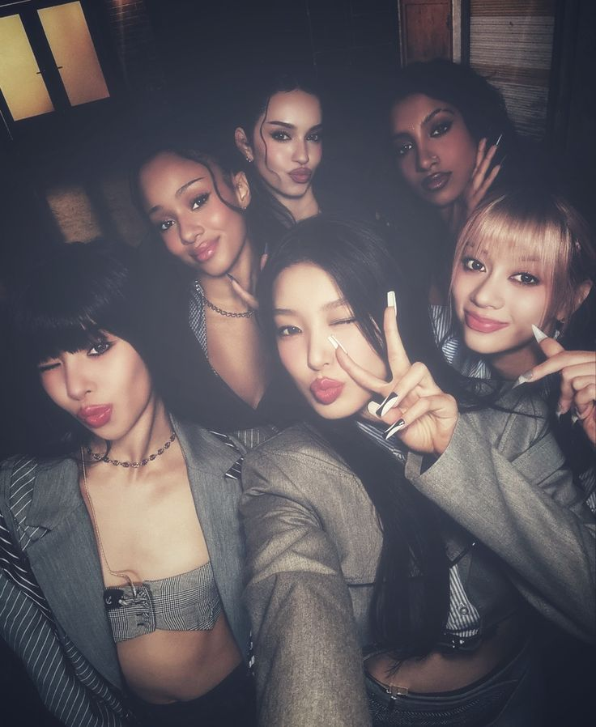

art
I've been doing art since i was really small, and even got 9th in an international art competition when i was 6!
this is an art piece i am most proud of
 click here for my portfolio!
click here for my portfolio!
hooiiiiiiiii, im esther (etshre) and this is my website! explore my hobbies, personality, likes, dislikes and current obsessions!
personal details (no i'm not doxxing myself) check out my likes and dislikes!I play around 12 and a half hours a week, making it hard to finish homework and do other things, but i make it through <3
click here to find out more!I've been doing art since i was really small, and even got 9th in an international art competition when i was 6!
this is an art piece i am most proud of
click here for my portfolio!
I'll admit, I have a love-hate relationship with singing, having been forced into it as a child. Now i tend to enjoy it more as i have more freedom over what i sing.
I typically sing opera when i sing solo, however i do also sing at st catherine's girls choir too so that adds some choral music to the mix.
i really really really really like hockey (as you can tell) and other than my hobbies, my likes include:
cats and dogs(animals in general tbh)
jolly ranchers
apothecary diaries
frieren
honkai: star rail
smiskies!!
blue things
i always have something i am obsessed with at this time.right now? i have to say katseye. i love yoonchae so much!!
 click here for past obsessions!